정보 탐색 니즈
- 목적별 메뉴를 통해 창업·채용·ESG 정보를 빠르게 찾고 싶음
- 브랜드별 핵심 가치와 최신 소식을 한눈에 비교하고 싶음
- 복잡한 기업 정보를 짧은 흐름 안에서 이해하고 싶음

브랜드 경험을 선명하게 정리한 반응형 메인 페이지
웹페이지 리뉴얼 개인 프로젝트

01.Over view
롯데 GRS는 롯데리아, 엔제리너스, 크리스피크림 도넛 등 다양한 F&B 브랜드를
운영하는 대한민국 대표 외식 프랜차이즈 기업 입니다.
기업의 비전과 브랜드 가치를 효과적으로 전달하고, 사용자 중심의 디지털 환경을
구축하여 브랜드 영향력을 강화 하고자 웹사이트를 리디자인 하였습니다.
02.Problem Analysis
기업 규모에 비해 정적인 정보 중심 구조로 구성되어 있어 브랜드의 규모감과 매력이 충분히 전달되지 않았습니다.
다양한 브랜드를 운영하고 있지만 각 브랜드의 개성과 스토리를 경험할 수 있는 요소가 부족했습니다.
ESG, 채용, 창업 등 핵심 정보가 분산되어 있어 원하는 콘텐츠를 빠르게 찾기 어려웠습니다.
기업 정보 제공에 집중되어 있어 사용자의 관심을 유도할 수 있는 인터랙션과 몰입 요소가 부족했습니다.
03.Target Paresona
“신뢰할 수 있는 브랜드와 함께 성공적인 창업을 준비하고 싶어요.”
“좋아하는 브랜드에서 성장하며 커리어를 쌓고 싶어요.”
“기업의 성장뿐 아니라 사회적 가치를 함께 응원하고 싶어요.”
04.Design System
롯데 GRS의 브랜드 아이덴티티를 상징하는 컬러로, 외식 산업에 대한 열정과 브랜드의 에너지를 표현하며 핵심 콘텐츠에 대한 집중도를 높입니다.
기업의 신뢰감과 전문성을 전달하는 컬러로, 브랜드의 무게감과 프리미엄 이미지를 강화합니다.
정보 콘텐츠의 가독성을 높이고, 주요 컬러 간 균형을 유지하여 안정적인 사용자 경험을 제공합니다.
Pretendard
명확한 정보 전달과 뛰어난 가독성을 바탕으로 다양한 디바이스 환경에서도 일관된 사용자 경험을 제공할 수 있도록 적용하였습니다.사이트 전반에 사용되는 핵심 UI 요소를 정리하여 일관된 사용자 경험과 효율적인 인터페이스 운영이 가능하도록 설계하였습니다.